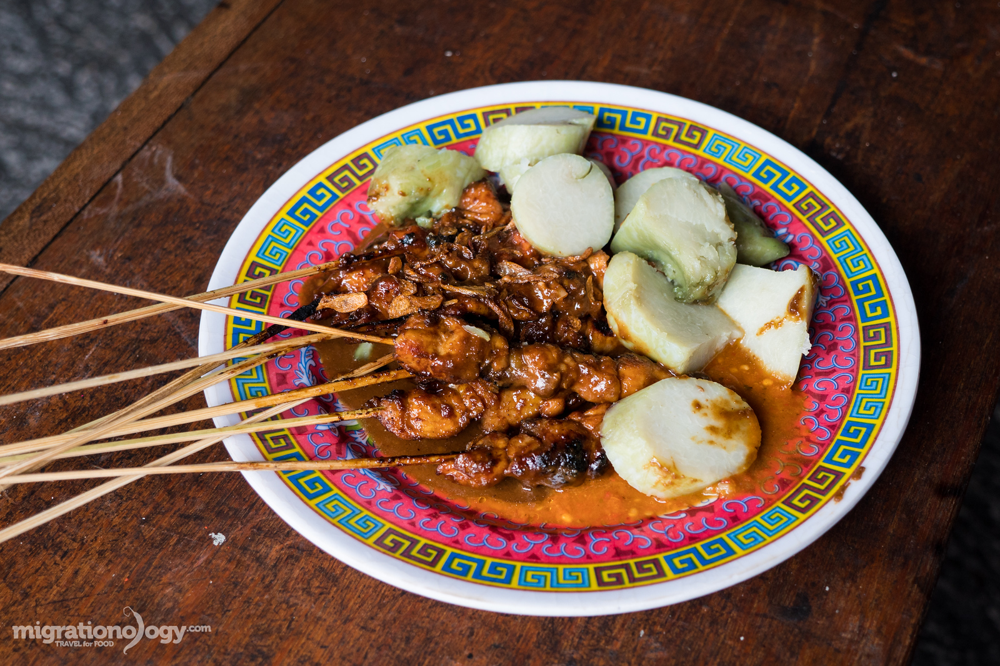

Ayam Bakar Taliwang
Have you ever eaten three chickens by yourself in one meal? When you eat ayam bakar Taliwang, not only are the grilled chickens so good you might be able to eat three of them by yourself, but they are also very small because they either free range chickens or sometimes spring chickens.
This type of grilled chicken originates from the island of Lombok, and it’s popular with spicy grilled chicken lovers throughout Indonesia. When I saw the amount of chilies caked onto my ayam bakar Taliwang, I knew I was in for a life-changing grilled chicken experience, and it was true.
Sate Ayam / Kambing
I’ve had a lot of different types of sate (or satay) in Southeast Asia, but there’s nothing that compares to real Indonesian sate; In my opinion you’ll find some of the absolute best sate in Asia within Indonesia. in Indonesia you’ll find many different types and varieties of sate, but two of the common versions in Jakarta at sate ayam (chicken sate) and sate kambing (goat sate).
Pepes
Pepes is very similar to Thai aeb, but it’s the Indonesian version of an assortment of fish, meat or tofu, mixed with lots of healthy herbs and spices, wrapped in a banana leaf package, and either steamed or grilled.
Originally a Sundanese food from the Western part of Java, some of the most common versions of pepes include chicken, different types of fish, tofu, or mushrooms, mixed with shallots, garlic, chilies, turmeric, candlenut, and lemon basil.